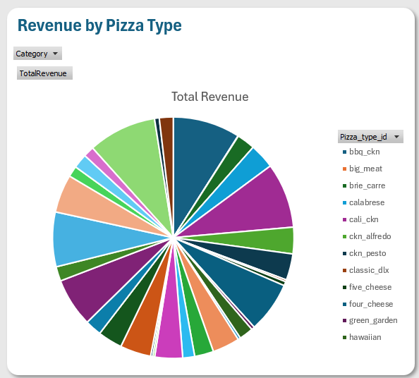
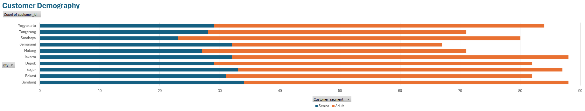

Academic Data Modelling
From restaurant records to useful views.
A group project combining a relational data model, Excel analysis, and dashboard visualisations.
- Course
- Data Modelling · ISYS6895003
- Class / Group
- Lab BE11 · Group 10
- Analysis Period
- 2015
Pizza Restaurant Sales Analysis (2015)
01What
This project analyses a pizza restaurant’s 2015 sales through an Excel workbook, data model, and dashboard.
02Why
Restaurant orders, products, ingredients, and customer records need a connected structure before sales patterns can be explored.
03Goal
The aim was to combine these records and support analysis of sales trends, product mix, ordering times, and customer segments.
04My Role
I contributed as a member of Group 10; the supplied materials do not specify my individual responsibilities.
05How
The group used Excel formulas, named ranges, what-if analysis, Power Pivot relationships, cube functions, charts, and slicers.
06Challenges
The workbook required consistent relationships across multiple tables and clear interpretation of results within the selected analysis context.
07Target Users
The intended users are restaurant managers and analysts exploring operational and sales information in an academic case study.
08Results
The group produced a multi-sheet analytical workbook, a connected data model, dashboard views, and a written project report.
Reading the Visualisations
Two time scales. One operating plan.
An annual sales total shows how much revenue was recorded, but it does not explain when the restaurant needs to be ready. The monthly revenue chart shows how sales value changes throughout the year. The weekday-and-hour heatmap adds an operational view: when orders arrive and when preparation, kitchen capacity, and service coverage may matter most.
- Recorded sales revenue
- $817,860.05 Across 2015 · revenue, not profit
- Orders analysed
- 21,350 Each order counted once
- Orders at 12:00–13:59
- 23.3% 4,975 orders across the year
A July peak, an autumn slowdown, and a November rebound.
Revenue rises and falls rather than following a steady upward trend. July records the highest monthly revenue at $72,557.90. Sales value then declines through October, the lowest month at $64,027.60, before recovering in November. The gap between July and October is $8,530.30, or approximately 13.3% of October’s revenue.
View the monthly revenue figures
| Month | Revenue |
|---|---|
| January | $69,793.30 |
| February | $65,159.60 |
| March | $70,397.10 |
| April | $68,736.80 |
| May | $71,402.75 |
| June | $68,230.20 |
| July | $72,557.90 |
| August | $68,278.25 |
| September | $64,180.05 |
| October | $64,027.60 |
| November | $70,395.35 |
| December | $64,701.15 |
| Annual total | $817,860.05 |
What this reveals
The chart identifies higher- and lower-revenue periods for investigation. It does not show whether the differences came from order volume, basket size, product mix, prices, or trading days.
How a manager could use it
Review the products and order patterns behind July and November before setting stock or campaign plans. Test offers in quieter periods, then measure incremental orders and margin rather than assuming a promotion will improve performance.
The annual total hides a lunchtime rush.
Across the year, 12:00–13:59 accounts for 4,975 orders (23.3%). A second busy window appears at 17:00–19:59, with 6,744 orders (31.6%). Friday has the highest weekday total, at 3,538 orders; the largest individual weekday-and-hour cell is Thursday, 13:00–13:59, with 438 orders. This shows why the busiest day overall and the busiest individual time slot are different planning questions.
| Weekday | 09:00 | 10:00 | 11:00 | 12:00 | 13:00 | 14:00 | 15:00 | 16:00 | 17:00 | 18:00 | 19:00 | 20:00 | 21:00 | 22:00 | 23:00 | Total |
|---|---|---|---|---|---|---|---|---|---|---|---|---|---|---|---|---|
| Monday | 0 | 1 | 226 | 398 | 331 | 182 | 192 | 247 | 317 | 303 | 235 | 174 | 134 | 53 | 1 | 2,794 |
| Tuesday | 1 | 0 | 188 | 421 | 371 | 196 | 191 | 295 | 309 | 301 | 274 | 214 | 131 | 81 | 0 | 2,973 |
| Wednesday | 0 | 2 | 231 | 420 | 381 | 201 | 210 | 259 | 343 | 335 | 238 | 193 | 139 | 72 | 0 | 3,024 |
| Thursday | 0 | 3 | 214 | 434 | 438 | 233 | 228 | 289 | 376 | 361 | 270 | 217 | 114 | 60 | 2 | 3,239 |
| Friday | 0 | 0 | 192 | 415 | 413 | 221 | 190 | 258 | 344 | 387 | 340 | 319 | 268 | 180 | 11 | 3,538 |
| Saturday | 0 | 1 | 85 | 222 | 260 | 225 | 235 | 294 | 325 | 388 | 371 | 328 | 265 | 147 | 12 | 3,158 |
| Sunday | 0 | 1 | 95 | 210 | 261 | 214 | 222 | 278 | 322 | 324 | 281 | 197 | 147 | 70 | 2 | 2,624 |
| All days | 1 | 8 | 1,231 | 2,520 | 2,455 | 1,472 | 1,468 | 1,920 | 2,336 | 2,399 | 2,009 | 1,642 | 1,198 | 663 | 28 | 21,350 |
Each cell shows all orders placed in that weekday-and-hour combination during 2015. For example, 12:00 covers 12:00–12:59. These are annual totals, not orders per day; a zero records no observed orders and does not establish opening hours.
What this reveals
Order activity is concentrated in particular time windows. Hourly counts provide a more useful starting point for service planning than spreading the annual total evenly across the week.
How a manager could use it
Prepare ingredients and arrange overlapping staff coverage before busy windows. Combine order counts with pizza quantities, product mix, preparation times, and service targets before deciding how much stock or how many people are needed.
Calculation basis and interpretation
Revenue is the sum of each order line’s quantity multiplied by its pizza price, assigned to the order date. Each unique order is counted once in the heatmap. The figures were checked against the project’s order, order-detail, and pizza-price tables and reproduce this transaction-level view.
One year of observations does not establish recurring seasonality or explain the causes of changes. Revenue is not profit, and orders are not pizza quantities or unique customers. The suggested actions are analytical recommendations, not documented changes implemented by the restaurant.
Download aggregate chart data ↗Original Project Evidence
Original coursework visuals are retained below. The workbook sales view uses a different revenue total from the transaction-level analysis above and should be read within its original calculation context.
 Original Workbook Sales ViewExplore Image
Original Workbook Sales ViewExplore Image 
Pizza Product MixExplore Image
Customer SegmentsExplore ImageFrom Source Data to Analysis
- 01
Connect the source tables
Structured restaurant data across customers, orders, order details, pizzas, pizza types, pizza details, and ingredients.
- 02
Model and calculate
Used Power Pivot relationships alongside Excel formulas, named ranges, what-if analysis, and cube functions to support workbook analysis.
- 03
Present the analysis
Developed dashboard views and charts for monthly trends, pizza types, ordering hours, and aggregate customer segments, with slicers for exploration.
Project attribution. Completed by Group 10: Muhammad Arif Fadhilah, Dimas Daniel Hadinoto, and Chelsea Cristiano Mulyadi. The submitted materials document the group’s output; individual responsibilities are not specified.